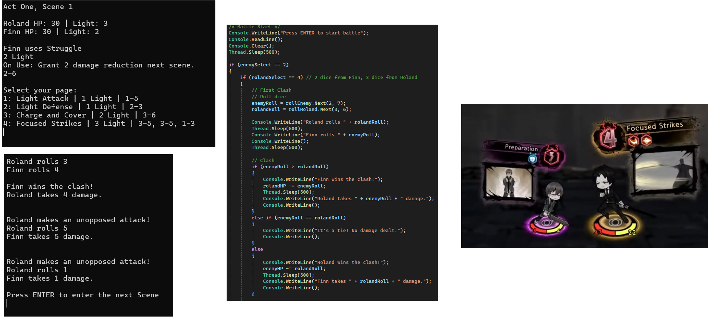

Logboek
| Week | Periode | Inhoud | Evaluaties | Opdrachten |
|---|---|---|---|---|
| 1 | 22/09 - 26/09 | Introductie Werkplekleren
Wat is programmeren Introductie POP, X-Factor & SDG's Introductie Scratch |
||
| 2 | 29/09 - 03/10 | Oriënteringstraject
Installatie Git & GitHub Introductie Git & GitHub |
LockDownBrowser | |
| 3 | 06/10 - 10/10 | POP motivatie, kerkwadranten en reflecteren
Labo: Git & GitHub |
Scratch | |
| 4 | 13/10 - 17/10 | POP planning & studieaanpak * | Git & GitHub | Reflecteren |
| 5 | 20/10 - 24/10 | Gastsprekers
EPOS reflectie van oriënteringstraject |
Gastsprekers | Planning |
| Herfstvakantie | ||||
| 6 | 03/11 - 07/11 | POP leren analyseren | ||
| 7 | 10/11 - 14/11 | POP carrièrekompas
Feedback evaluatie |
C# Console | POP carrièrekompas |
| 8 | 17/11 - 21/11 | POP personal branding
Introductie curriculum vitae Introductie portfolio |
Feedback evaluatie C# Console | |
| 9 | 24/11 - 28/11 | Instroombevraging
Feedback evaluatie |
HTML & CSS | |
| 10 | 01/12 - 05/12 | Documenteren en debuggen in C#
Labo: Debuggen (C#) |
Debuggen (idem aan labo) | Feedback evaluatie debuggen |
| 11 | 08/12 - 12/12 | Labo: WPF
Gastsprekers |
SDG's | |
| 12 | 15/12 - 19/12 | POP kernkwadranten
Afwerken curriculum vitae Afwerken labo WPF |
Curriculum Vitae | |
| Kerstvakantie | ||||
| Kerstvakantie | ||||
| 13 | 05/01 - 09/01 | Infosessie Thalento | C# WPF | Portfolio |
| 14 | 12/01 - 16/01 | Introductie Corda
Feedback evaluatie C# WPF |
Inhaalmoment | |
Ontwikkeling
Mijn keuze voor deze opleiding
Waarom kies je voor de opleiding programmeren?
Sinds dat ik jonger was, was ik heel nieuwsgierig naar hoe software/apps en games werken. Ik had ook al toen ik nog op de middelbare school zat zelfstandig proberen games te programmeren in bv. C# of Lua, en daarna heb ik ook IT & Netwerken gevolgd op de middelbare school waar ik zat om dit verder te beoefenen. Hier bleek ook dat ik goed was in coderen aangezien mijn punten altijd heel goed waren en ik meestal de eerste was die nieuwe leerstof begreep. Wat mij ook interesseerde aan IT is dat het de toekomst is en er altijd job mogelijkheden zijn in dit veld.
Waarom denk je dat dit beroep bij jou past?
Ik kan goed met computers werken en ben snel met nieuwe technologieën aan te leren (ik ben snel weg met nieuwe programma’s te leren en gebruiken zoals WebStorm, GitHub, …), wat essentieel is aangezien IT constant zit te veranderen. Ik ben ook snel met typen wat ook veel verschil kan maken op lange termijn als ik lange code moet schrijven aan één stuk. Zelf ben ik nieuwsgierig in nieuwe codetalen te leren en kan ik ook snel code begrijpen als ik het lees.
Competenties programmeur
| OLR | Omschrijving |
|---|---|
| Rol: Ontwerper | |
| OLR1 | De gegradueerde bereidt de realisatie van een softwareproject voor. |
| OLR2 | De gegradueerde maakt op basis van een analyse een onderbouwd voorstel voor:
a. het ontwerp, b. de programmeertaal en c. de methodiek De gegradueerde stemt het voorstel af met de softwareontwikkelaar, analist en/of projectleider. |
| Rol: Programmeur | |
| OLR3 | De gegradueerde realiseert softwareapplicaties en gegevensstructuren. De gegradueerde werkt hierbij planmatig binnen de context van het projectplan, de beschikbare tools en de vooropgestelde methodiek. |
| OLR4 | De gegradueerde is medeverantwoordelijk voor de eigen digitale werkomgeving en draagt bij tot de gedeelde infrastructuur die nodig is voor het ontwikkelen, testen en in productie brengen van projecten. |
| OLR5 | De gegradueerde programmeert softwaretoepassingen volgens de standaarden en afspraken binnen de organisatie. |
| OLR6 | De gegradueerde gaat in overleg met de softwareontwikkelaar, analist en/of projectleider na of het opgeleverde product onderhoud en/of aanpassingen nodig heeft. De gegradueerde voert het onderhoud en de aanpassingen projectmatig uit, rekening houdend met eerder gemaakte afspraken. |
| Rol: Tester | |
| OLR7 | De gegradueerde gaat volgens testscenario’s de werking en functionaliteit van de gerealiseerde code na en verbetert deze op basis van feedback van de softwareontwikkelaar, analist, projectleider en/of gebruikers. |
| Rol: Communicator / Teamspeler | |
| OLR8 | De gegradueerde werkt constructief en actief samen in een multidisciplinair team en participeert actief tijdens overlegmomenten. De gegradueerde zoekt mee naar oplossingen om problemen te vermijden. |
| OLR9 | De gegradueerde communiceert en rapporteert efficiënt over het geleverde werk, aangepast aan het doelpubliek en gebruikt hiervoor het gepaste Engelstalige vakjargon. |
| OLR10 | De gegradueerde documenteert de zelf ontwikkelde applicaties op een adequate en overzichtelijke manier gebruikmakend van een kennisdatabank en volgens de afspraken binnen de organisatie. De gegradueerde geeft kwalitatieve input voor de gebruikershandleidingen, referentiegidsen en online hulpbronnen. |
| Rol: Levenslang lerende IT-professional | |
| OLR11 | De gegradueerde onderhoudt zijn deskundigheidsniveau door relevante duurzame IT- en maatschappelijke ontwikkelingen actief op te volgen. |
| OLR12 | De gegradueerde is zelfkritisch, ontwikkelt de nodige zelfkennis en gebruikt deze om zijn persoonlijke en professionele groei te bevorderen. |
| OLR13 | De gegradueerde handelt deontologisch en duurzaam, en houdt rekening met de veiligheids- en privacyrichtlijnen. |
Situering binnen profiel
Waar sta je momenteel?
Ontwerper: Ik kan zelf een idee vormen over hoe ik een project kan maken en in mijn hoofd nadenken over hoe de code eruit zou moeten zien en werken.
Programmeur: Zelf heb ik al meerdere game systems nagemaakt in C# bv. zoals een AI die willekeurig verandert van plaatsen op willekeurige intervallen en een bare-bones battle system waar de speler aanvalt tegen een AI en via ‘dice-rolling’ een nummer trekken binnen een bepaalde range om te bepalen wie wint en kan aanvallen.
Tester: Ik kan via code te lezen of het programma zelf uit te testen kijken hoe ik een foute optie kan vinden om het te laten crashen om dit dan te fixen.
Communicator / Teamspeler: Ik kan mijn code documenteren om bv. methodes duidelijker te maken voor teamgenoten of eindgebruikers die de code later moeten gebruiken en hulp vragen aan teamgenoten als ik zelf iets niet begrijp of kan coderen. Ik gebruik ook bijna alleen Engels wanneer ik zelf bezig ben met projecten dus kan ik ook de vaktaal begrijpen.
Levenslang lerende IT-professional: Ik werk zelf aan projecten uit passie en kan hierdoor ook mee met de tijd.
Wat lukt je al goed?
Ontwerper: Ik kan op ideeën komen en een mentale schets maken over hoe een programma zou functioneren.
Programmeur: Ik kan zelf al kleine projecten maken gebaseerd op bestaande games en zelf nadenken over hoe ik dat zou kunnen repliceren.
Tester: Ik kan in een programma manieren vinden om foute invoeren te geven om defensief te programmeren
Communicator / Teamspeler: Ik kan code duidelijk documenteren en hulp vragen aan teamgenoten.
Levenslang lerende IT-professional: Ik werk zelf aan projecten dus ben altijd mee met nieuwe ontwikkelingen.
Wat lukt je nog niet?
Ontwerper: Ik heb altijd onvoorziene bugs of methodes waarvan ik nog niet aan had gedacht, maar meestal is dit geen groot probleem.
Programmeur: Sommige dingen ken ik nog niet compleet maar ik neem aan dat dit komt met meer te leren en oefenen.
Tester: Ik zie af en toe bepaalde manieren om een programma te laten crashen over het hoofd dus kan het zijn dat programma's wel nog steeds crashen
Communicator / Teamspeler: Ik ben niet geweldig in communiceren of actief deel te nemen aan gesprekken. Ik ben eerder iemand die alleen luistert en doet wat er gevraagd wordt.
Levenslang lerende IT-professional: Ik ga altijd een stap achter uit zijn aangezien ik nog niet al te veel weet over verschillende codetalen en software.
Voorbeelden van activiteiten
Geef drie concrete voorbeelden van activiteiten binnen elke rol die je hebt uitgevoerd of geobserveerd
Ontwerper: Ik heb zelf projecten gemaakt, zie foto onderaan.
Programmeur: Documentatie videos over hoe game AI werkt.
Tester: Videos op Youtube over hoe je een game beter kan optimiseren.
Communicator / Teamspeler: Voor PEs te studeren vraag ik meestal hulp aan vrienden of klasgenoten of werk ik samen om het beter op te nemen.
Levenslang lerende IT-professional: Zelf projecten maken.
Motiveer waarom je vindt dat deze activeit binnen die rol thuishoort.
Ontwerper: Om een project te maken moet je zelf nadenken over hoe het eindresultaat eruit zou moeten zien en de belangrijke methodes die eraan vasthangen.
Programmeur: In deze videos wordt de code en gebeurtenissen duidelijk uitgelegd waardoor het makkelijk is om te vertalen naar andere programmeertalen
Tester: In deze videos wordt meestal gepraat over hoe het project eruit ziet voor de eindgebruiker en hoe het er beter kan uit zien om een betere ervaring te geven.
Communicator / Teamspeler: Ik communiceer met mensen
Levenslang lerende IT-professional: Ik ben actief bezig met programmeren dus hou ik ook mijn kennis bij en leer ik ook bij.
In totaal beschrijf je dus 15 voorbeelden (3 per rol).
Ontwerper: Zie foto onderaan.
Programmeur: Zie foto onderaan, deze video over hoe FNaF 1 werkt en deze video over hoe FNaF 4 werkt
Tester: PEs waar we moeten debuggen, deze YouTuber die tips geeft over hoe je spellen kan verbeteren.
Communicator / Teamspeler: Studeren met klasgenoten en vrienden.
Levenslang lerende IT-professional: Zie foto onderaan, graduaat programmeren studeren, PEs maken.
Heb je nog onvoldoende ervaring? Beschrijf dan een activiteit die bij een bepaalde rol past en die je later zou willen uitvoeren.
Ik moet nog verbeteren in communiceren met teamgenoten.
Video van het spel

Opdrachten
| LockDownBrowser | Installeer vooraf de LockDown Browser. Voor deze toets is verder geen voorkennis vereist | Uitdagingen | Bijgeleerd |
|---|---|---|---|
| Scratch | Maak kennis met de basisprincipes van het programmeren door een game te ontwikkelen met Scratch | Uitdagingen | Bijgeleerd |
| Git & GitHub | Je kennis over Git en GitHub worden getest aan de hand van een eenvoudige opdracht in HTML | Uitdagingen | Bijgeleerd |
| Reflecteren | Schrijf een korte reflectie over de Scratch-opdracht | Uitdagingen | Bijgeleerd |
| Gastsprekers | Maak een korte reflectie over de gastsprekers | Uitdagingen | Bijgeleerd |
| Planning | Maak een gedetailleerde semester- en weekplanning voor dit semester | Uitdagingen | Bijgeleerd |
| C# Console | Maak een consoleapplicatie in C#. Maak hiervoor gebruik van variabelen, controle- en herhalingsstructuren en methodes | Uitdagingen | Bijgeleerd |
| Carrièrekompas | Maak een vacatureopdracht over werkveldverkenning | Uitdagingen | Bijgeleerd |
| Feedback C# Console | Vertaal de algemene feedback op de consoleapplicatie naar je eigen project | Uitdagingen | Bijgeleerd |
| HTML & CSS | Bouw een webpagina zo goed mogelijk na met HTML en CSS | Uitdagingen | Bijgeleerd |
| Debugging | Haal de fouten uit een bestaande consoleapplicatie, gebruik hiervoor de debugging tools van Visual Studio | Uitdagingen | Bijgeleerd |
| Feedback Debugging | Vertaal de algemene feedback op de PE over debugging naar je eigen PE | Uitdagingen | Bijgeleerd |
| SDG's | Maak een korte reflectie over de SDG’s | Uitdagingen | Bijgeleerd |
| Curriculum Vitae | Maak een volledig CV met HTML en CSS | Uitdagingen | Bijgeleerd |
| C# WPF | Bouw de GUI van een WPF-applicatie zo goed mogelijk na | Uitdagingen | Bijgeleerd |
| Portfolio | Maak een portfolio voor alles van Werkplekleren te documenteren | Uitdagingen | Bijgeleerd |
Reflectie
AIM-reflectie op WPL1
INTRO
Lalala~
Wat vond je een bijzonder positief element van Werkplekleren 1?
Lalala~
Wat vond je een minder leuk element van Werkplekleren 1?
Lalala~
Welke nieuwe inzichten neem je mee uit Werkplekleren 1?
Lalala~
Wat zou je een persoonlijk succes noemen tijdens Werkplekleren 1? Waarop ben je trots?
Lalala~
Wat neem ik mee naar volgende WPL
Kernkwaliteit:
Lalala~
Valkuil:
Lalala~
Allergie:
Lalala~
Uitdaging:
Lalala~
X-Factor
(Em)passie
Lalala~
Ondernemend & Innovatief
Lalala~
(internationaal) samen(net)werken
Lalala~
Multi- & disciplinariteit
Lalala~